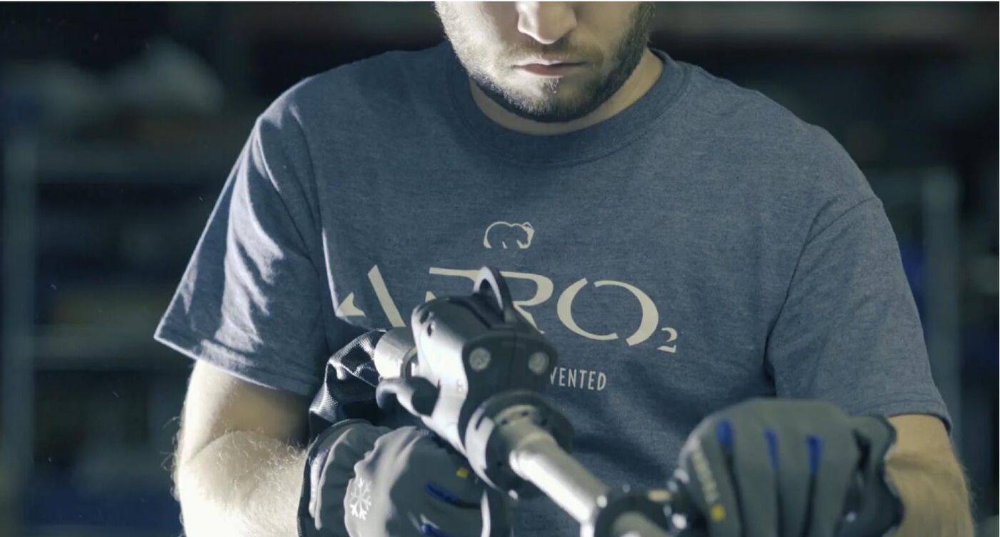
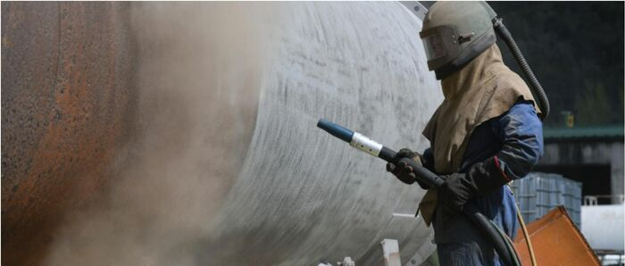
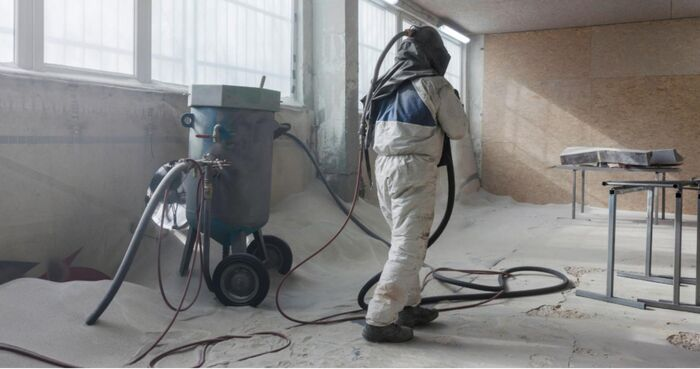
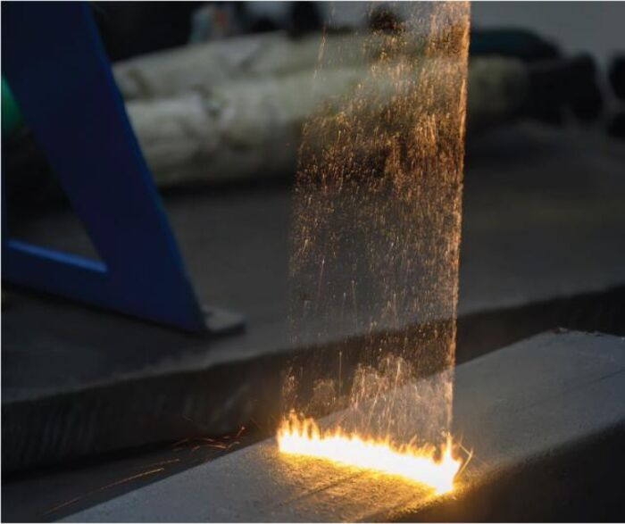
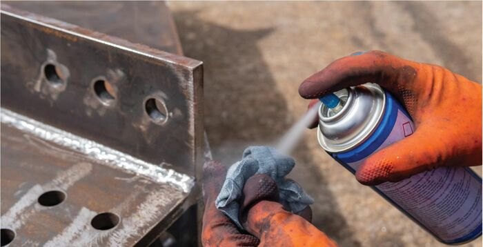
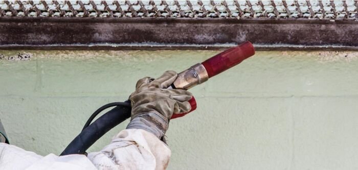
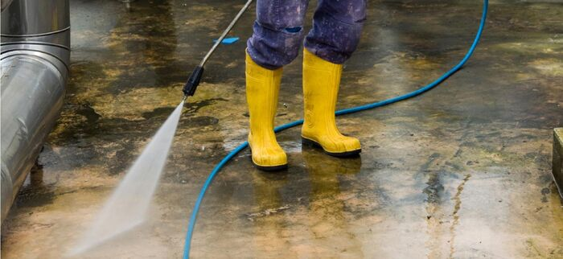

연마재·화학용제·고압세척 등 기존 방식과 드라이아이스 세척의 차이를 비교합니다.

드라이아이스 블라스팅 작업 장면 (참고: Cold Jet 공식 기술자료 p.16)
산업 현장에서 세정 방식을 선정할 때는 제거 성능뿐 아니라 기재의 손상 가능성, 2차 폐기물, 건조 및 폐수 처리, 작업자 안전, 설비 비가동 시간 등을 종합적으로 검토해야 합니다.
드라이아이스 세척은 비마모성 · 건식 · 승화라는 특성 덕분에 이러한 운용 요소를 동시에 단순화할 수 있다는 장점이 있습니다. 특히 기재의 표면 상태를 유지하면서 후처리 공정을 줄여야 하는 환경에서 검토 가치가 높습니다.
| 세척 방식 | 기재 영향 | 2차 잔류물 · 폐기물 | 수분 · 건조 | 운영상 특징 |
|---|---|---|---|---|
| 드라이아이스 세척 | 비마모성 | 승화되어 잔류하지 않음 | 건식 | 기재 보호와 후처리 단순화에 유리 |
| 연마 블라스팅 | 연마재 종류에 따라 마모 · 요철 발생 가능 | 연마재 · 분진 발생 | 건식 | 표면 변화와 매체 처리 필요 |
| 샌드 블라스팅 | 강한 연마작용으로 마모 · 요철 발생 가능 | 폐사 · 분진 발생 | 건식 | 분진 관리와 폐사 처리 필요 |
| 레이저 세정 | 조건 설정에 따라 표면 영향 가능 | 증기화된 오염물 환기 관리 필요 | 건식 | 초기 투자와 전문적 운전조건 관리 필요 |
| 수작업 · 화학용제 | 반복적 물리 접촉으로 민감 표면 손상 가능 | 용제 · 제거 오염물 취급 · 처리 필요 | 습식 · 용제 | 작업시간 · 인력 부담, 복잡 형상 접근성 고려 필요 |
| 소다 블라스팅 | 비교적 부드러운 연마작용으로 표면 영향 가능 | 미세 소다 분말 잔류 | 건식 | 잔류 분말의 추가 제거 및 관리 필요 |
| 고압 세척 | 고압수에 의해 민감 표면 손상 가능성 | 오 · 폐수 발생 | 습식 | 건조 · 부식 방지, 전기 · 정밀부품 보호 필요 |
※ 실제 세정 결과와 적용 가능성은 기재의 재질, 오염물의 종류와 두께, 분사 압력, 입자 크기, 노즐 및 작업 환경에 따라 달라질 수 있으므로 사전 테스트를 통한 조건 확인이 필요합니다.

유리 · 호두껍질 등 연마재를 사용하며, 매체 종류에 따라 표면 마모나 요철이 발생할 수 있습니다.

강한 연마력으로 두꺼운 오염물 제거에 쓰이지만, 분진과 폐사 처리 부담이 있습니다.

비접촉 방식이지만 초기 장비 투자비가 높고 전문적인 운전 조건 관리가 필요합니다.

복잡한 형상에도 접근할 수 있지만, 반복적인 물리적 접촉과 용제 취급 부담이 있습니다.

비교적 부드러운 연마 방식이지만, 잔류 분말을 추가로 제거 · 관리해야 합니다.

강력한 세정력을 내지만 폐수가 발생하고, 전기 · 정밀 부품은 별도 보호가 필요합니다.
(참고: Cold Jet 공식 기술자료 The Definitive Guide to Dry Ice Blasting 및 coldjet.com)
현장 상황에 맞는 가장 정확한 답변을 담당자가 안내해 드립니다.